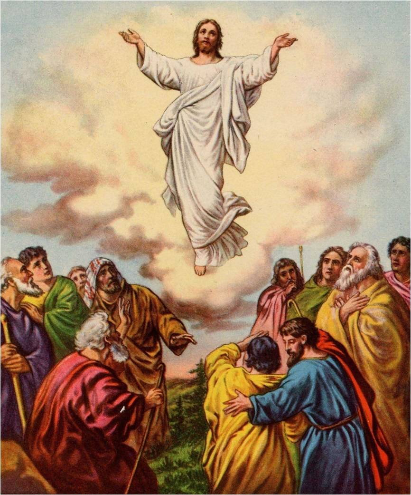

เสด็จมาครั้งที่สองของพระเยซูคริสต์
ในตอนต้นของยุคมิลเลเนียม, พระคริสต์จะเสด็จกลับมายังแผ่นดินโลก. เหตุการณ์นี้จะเป็นเครื่องหมายของการยุติการทดสอบมนุษย์บนโลกนี้. คนชั่วจะถูกนำออกไปจากแผ่นดินโลกและคนชอบธรรมจะทรงรับขึ้นไปในเมฆขณะชำระล้างแผ่นดินโลก. แม้จะไม่มีมนุษย์คนใดรู้แน่นอนว่าพระคริสต์จะเสด็จมาครั้งที่สองเมื่อใด, แต่พระองค์ก็ได้ประทานเครื่องหมายให้เราเฝ้าดูเพื่อจะบอกว่าเวลาใกล้เข้ามาแล้ว (มธ. ๒๔; จส—ม ๑).
ข้าทราบว่าในที่สุดพระผู้ไถ่ของข้าจะทรงปรากฏบนแผ่นดินโลก, โยบ ๑๙:๒๕.
ทุกเข่าจะกราบลง, ทุกลิ้นจะปฏิญาณต่อเรา, อสย. ๔๕:๒๓ (คพ. ๘๘:๑๐๔).
บุตรมนุษย์มาพร้อมกับบรรดาเมฆของสวรรค์, ดนล. ๗:๑๓ (มธ. ๒๖:๖๔; ลูกา ๒๑:๒๕–๒๘).
เขาทั้งหลายมองดูเราผู้ซึ่งเขาเองได้แทง, ศคย. ๑๒:๑๐.
ถ้าผู้ใดจะถามเขาว่า, ทำไมท่านมีแผลเป็นที่หลัง ? ศคย. ๑๓:๖ (คพ. ๔๕:๕๑).
ใครจะทนอยู่ได้ในวันที่ท่านมา ? เพราะว่าท่านเป็นประดุจไฟถลุงแร่, มลค. ๓:๒ (๓ นี. ๒๔:๒; คพ. ๑๒๘:๒๔).
บุตรมนุษย์จะเสด็จมาด้วยพระสิริแห่งพระบิดา, มธ. ๑๖:๒๗ (มธ. ๒๕:๓๑).
วันนั้นโมงนั้นไม่มีใครรู้, รู้แต่พระบิดาองค์เดียว, มธ. ๒๔:๓๖ (คพ. ๔๙:๗; จส—ม ๑:๓๘–๔๘).
พระเยซูองค์นี้จะเสด็จมาอีกเหมือนอย่างที่ท่านทั้งหลายได้เห็นพระองค์เสด็จไปยังสวรรค์นั้น, กิจการ ๑:๑๑.
องค์พระผู้เป็นเจ้าจะเสด็จมาจากสวรรค์, ๑ ธส. ๔:๑๖.
วันขององค์พระผู้เป็นเจ้านั้นจะมาถึงเหมือนอย่างขโมยแอบย่องมาตอนกลางคืน, ๒ ปต. ๓:๑๐.
องค์พระผู้เป็นเจ้าได้เสด็จมาพร้อมกับผู้บริสุทธิ์ของพระองค์เป็นหมื่น ๆ คน, ยูดา ๑:๑๔.
พระองค์จะเสด็จมาพร้อมกับหมู่เมฆ; และนัยน์ตาทุกดวงจะเห็นพระองค์, วว. ๑:๗.
พระเยซูจะทรงยืนพิพากษาโลก, ๓ นี. ๒๗:๑๔–๑๘.
จงเตรียม, เจ้าจงเตรียม, เพราะพระเจ้าทรงใกล้เข้ามาแล้ว, คพ. ๑:๑๒.
เราจะเปิดเผยตัวเราจากสวรรค์ด้วยอำนาจ, และพำนักบนแผ่นดินโลกหนึ่งพันปี, คพ. ๒๙:๙–๑๒.
จงเปล่งเสียงของเจ้าและป่าวร้องการกลับใจ, โดยเตรียมมรรคาแห่งพระเจ้ารับการเสด็จมาครั้งที่สองของพระองค์, คพ. ๓๔:๕–๑๒.
เราคือพระเยซูคริสต์, เราจะมาที่วิหารของเราโดยพลัน, คพ. ๓๖:๘ (คพ. ๑๓๓:๒).
วันนั้นจะมาถึงในไม่ช้าเมื่อเจ้าจะเห็นเรา, และรู้ว่าเราดำรงอยู่, คพ. ๓๘:๘.
คนที่เกรงกลัวเราจะเฝ้ารอเครื่องหมายการเสด็จมาของบุตรแห่งพระมหาบุรุษ, คพ. ๔๕:๓๙.
พระเจ้าจะเปิดผ้าคลุมพระพักตร์ของพระองค์, คพ. ๘๘:๙๕.
วันอันน่าพรั่นพรึงและสำคัญยิ่งของพระเจ้าอยู่ใกล้, คพ. ๑๑๐:๑๖.
เมื่อพระผู้ช่วยให้รอดจะทรงปรากฏเราจะเห็นพระองค์ดังที่พระองค์ทรงดำรงอยู่, คพ. ๑๓๐:๑.
พระผู้ช่วยให้รอดจะทรงยืนท่ามกลางผู้คนของพระองค์และจะทรงปกครอง, คพ. ๑๓๓:๒๕.
ใครเล่าที่ลงมาจากพระผู้เป็นเจ้าในสวรรค์ด้วยอาภรณ์ย้อมสี, คพ. ๑๓๓:๔๖ (อสย. ๖๓:๑).